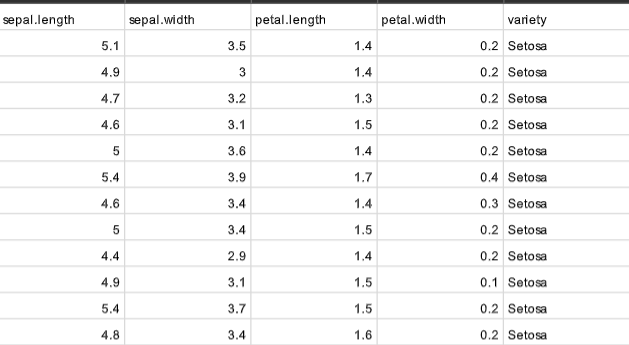

AIM: To implement and demonstrate the K-Nearest Neighbors (KNN) algorithm for classifying data samples based on the classes of their nearest neighboring training examples.
Description: K-Nearest Neighbors (KNN) is a supervised machine learning algorithm used for classification. It stores the training data and classifies a new data point by calculating its distance from the training examples. The K nearest data points are selected, and the class that occurs most frequently among these neighbors is assigned to the new data point. In this implementation, Euclidean distance is used to measure the distance between data points, and the dataset is divided into 60% training data and 40% testing data. The performance of the algorithm is evaluated using the classification accuracy.

import pandas as pd
import random
data = pd.read_csv("iris.csv", header=None)
data = data.values.tolist()
random.shuffle(data)
X = [row[0:4] for row in data]
y = [row[4] for row in data]
train_size = int(0.6 * len(X))
X_train = X[:train_size]
y_train = y[:train_size]
X_test = X[train_size:]
y_test = y[train_size:]
print("Training data:", len(X_train))
print("Testing data:", len(X_test))
def euclidean_distance(point1, point2):
distance = 0
for i in range(len(point1)):
distance = distance + (float(point1[i]) - float(point2[i])) ** 2
return distance ** 0.5
def knn_predict(X_train, y_train, test_point, k):
distances = []
for i in range(len(X_train)):
distance = euclidean_distance(test_point, X_train[i])
distances.append((distance, y_train[i]))
distances.sort(key=lambda x: x[0])
neighbors = distances[:k]
class_count = {}
for distance, label in neighbors:
if label in class_count:
class_count[label] += 1
else:
class_count[label] = 1
predicted_class = None
highest_count = 0
for label in class_count:
if class_count[label] > highest_count:
highest_count = class_count[label]
predicted_class = label
return predicted_class
k = 5
predictions = []
for test_point in X_test:
prediction = knn_predict(X_train, y_train, test_point, k)
predictions.append(prediction)
correct = 0
for i in range(len(y_test)):
if predictions[i] == y_test[i]:
correct += 1
accuracy = (correct / len(y_test)) * 100
print("Correct Predictions:", correct)
print("Total Test Data:", len(y_test))
print("Accuracy:", accuracy, "%")